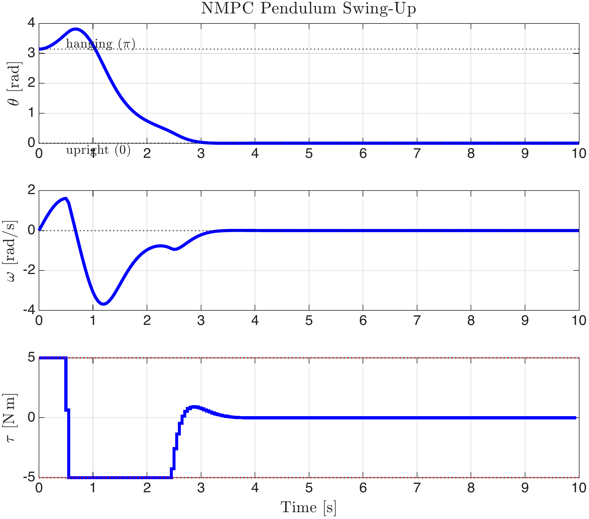
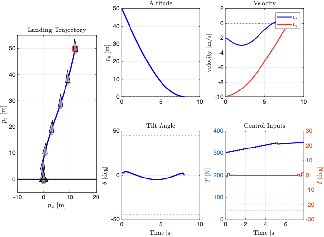

“The real world is nonlinear.”
— virtually every control textbook
Linear MPC assumes \(x_{k+1} = Ax_k + Bu_k\). This is adequate near a single operating point, but fails when the system traverses large regions of its state space. A pendulum cannot swing from hanging to inverted using a controller designed around either equilibrium. A rocket cannot land using a model linearised at altitude. A chemical reactor cannot transition between steady states through a linear corridor.
This chapter develops Nonlinear MPC (NMPC), which replaces the linear model with the full nonlinear dynamics \(x_{k+1} = f(x_k, u_k)\). Two solution paradigms are presented:
Nonlinear programming (NLP): Solve the non-convex optimisation directly using interior-point or SQP methods (Section 1.3).
Sequential convex programming (SCP): Approximate the NLP as a sequence of QPs, each solved with the fast, reliable tools from Chapter [chap:linear_mpc] (Section 1.4).
Both approaches are demonstrated on physical systems: a pendulum swing-up (NLP) and a powered rocket landing (SCP).
At each sampling instant \(t\), NMPC solves the following optimal control problem (OCP):
The NMPC Optimisation Problem \[\begin{align*} \min_{u_0, \dots, u_{N-1}} \quad & J = \sum_{k=0}^{N-1} \ell(x_k, u_k) + V_f(x_N) \\[4pt] \text{s.t.} \quad & x_0 = x(t) & \text{(Initialisation)} \\ & x_{k+1} = f(x_k, u_k), \;\; k = 0, \dots, N{-}1 & \text{(Nonlinear Dynamics)} \\ & h(x_k, u_k) \le 0, \;\; k = 0, \dots, N{-}1 & \text{(Path Constraints)} \\ & x_N \in \mathcal{X}_f & \text{(Terminal Constraint)} \end{align*}\] where \(\ell(\cdot)\) is the stage cost, \(V_f(\cdot)\) the terminal cost, \(f(\cdot)\) the nonlinear discrete-time dynamics, \(h(\cdot)\) encodes state and input constraints, and \(\mathcal{X}_f\) is the terminal set.
When \(f\) is linear and \(\ell\), \(V_f\) are quadratic, this reduces to the QP of Chapter [chap:linear_mpc]. For general \(f\), the equality constraints \(x_{k+1} = f(x_k, u_k)\) make the feasible set non-convex, and the problem becomes a nonlinear programme (NLP).
Two consequences follow:
Local minima. Solvers may converge to a locally optimal but globally suboptimal solution. The result depends on the initial guess.
Computational cost. Each NLP iteration requires Jacobians and possibly Hessians of \(f\) and \(h\). The solver must finish within one sampling period \(T_s\).
NMPC Reduces to Linear MPC Setting \(f(x,u) = Ax + Bu\), \(\ell(x,u) = x^\top Q x + u^\top R u\), \(V_f(x) = x^\top P x\), and \(h(x,u) = [u - u_{\max};\; -u + u_{\min};\; x - x_{\max};\; -x + x_{\min}]\) recovers the QP from Section [sec:mpc_formulation] exactly. Every result in this chapter specialises to the linear case.
Stability. The stability framework from Chapter [chap:linear_mpc] (terminal cost, terminal set, recursive feasibility) extends to NMPC, but proving it requires stronger assumptions: the terminal cost \(V_f\) must be a local control Lyapunov function for the nonlinear dynamics, and the terminal set \(\mathcal{X}_f\) must be positively invariant under a local stabilising controller. The seminal reference is ; a textbook treatment is given in . In this chapter, we focus on computation rather than stability proofs.
The OCP is an infinite-dimensional problem (optimise over function spaces). Direct methods discretise time and convert it into a finite-dimensional NLP that standard solvers can handle.
Eliminate the states entirely. Given a control sequence \(u_0, \dots, u_{N-1}\) and the initial state \(x_0\), simulate forward: \[x_1 = f(x_0, u_0), \quad x_2 = f(x_1, u_1), \quad \dots, \quad x_N = f(x_{N-1}, u_{N-1}).\] The NLP has \(N \cdot n_u\) decision variables (controls only). State constraints must be imposed as functions of \((u_0, \dots, u_{N-1})\), which couples all variables and produces dense Jacobians.
Single shooting is simple to implement but suffers from ill-conditioning: a small change in \(u_0\) propagates through the entire trajectory, producing steep, poorly scaled gradients.
Treat both states and controls as decision variables. The dynamics become explicit equality constraints:
Direct Multiple Shooting NLP Decision variables: \(z = (x_1, \dots, x_N, u_0, \dots, u_{N-1}) \in \mathbb{R}^{N(n_x + n_u)}\). \[\begin{align*} \min_z \quad & \sum_{k=0}^{N-1} \ell(x_k, u_k) + V_f(x_N) \\ \text{s.t.} \quad & x_{k+1} - f(x_k, u_k) = 0, \quad k = 0, \dots, N{-}1 \\ & h(x_k, u_k) \le 0, \quad k = 0, \dots, N{-}1 \\ & x_0 = x(t) \;\text{(fixed)} \end{align*}\]
The problem is larger (\(N(n_x + n_u)\) variables vs. \(N n_u\)), but the constraint Jacobian is block-banded: the dynamics at step \(k\) involve only \((x_k, u_k, x_{k+1})\). NLP solvers exploit this sparsity for \(O(N)\) per-iteration cost.
Multiple shooting also decouples the trajectory: perturbations in \(u_k\) affect \(x_{k+1}\) directly but do not cascade further (the equality constraints absorb the mismatch). This dramatically improves convergence compared to single shooting.
Which Transcription to Use? Direct multiple shooting is the default choice for NMPC. It offers better convergence, straightforward state constraints, and exploitable sparsity. Single shooting is only competitive for very small problems (\(N \cdot n_u < 10\)) or when the dynamics are cheap to simulate but expensive to differentiate.
Instead of Forward Euler or RK4 integration between shooting nodes, direct collocation approximates the state trajectory within each interval by a polynomial (typically Legendre or Radau). The polynomial coefficients become decision variables, and the dynamics are enforced at selected collocation points.
Collocation produces an implicit integration scheme, making it well-suited for stiff systems (chemical reactors, power electronics). The NLP is larger but highly structured. We do not develop collocation further here; see for a detailed treatment.
CasADi is an open-source framework for algorithmic differentiation (AD) and numerical optimisation. It provides a symbolic interface for defining nonlinear functions and automatically generates the exact Jacobians and Hessians required by NLP solvers. CasADi interfaces with IPOPT (Interior Point OPTimiser), a primal-dual interior-point solver for large-scale NLPs.
The workflow in MATLAB is:
Declare symbolic variables via
casadi.Opti().
Define dynamics, cost, and constraints symbolically.
Call opti.solver(’ipopt’) and
opti.solve().
CasADi computes all derivatives automatically—no manual Jacobians required.
NMPC for Pendulum Swing-Up A simple pendulum of mass \(m\) and length \(l\) is actuated by a torque \(\tau\) at the pivot. The angle \(\theta\) is measured from the upright vertical (\(\theta = 0\) is inverted, \(\theta = \pi\) is hanging). The continuous-time dynamics are: \[\begin{align*} \dot{\theta} &= \omega, & \dot{\omega} &= \frac{g}{l}\sin\theta + \frac{\tau}{m l^2}, \end{align*}\] where \(g = 9.81\;\text{m/s}^2\), \(l = 1\;\text{m}\), \(m = 1\;\text{kg}\), and \(|\tau| \le 5\;\text{N\,m}\).
Task: Drive the pendulum from the stable hanging position \((\theta, \omega) = (\pi, 0)\) to the unstable upright equilibrium \((\theta, \omega) = (0, 0)\) — the classic swing-up manoeuvre.
Linear MPC linearised at the upright equilibrium gives \(\dot{\omega} \approx (g/l)\theta + \tau/(ml^2)\). Near \(\theta = 0\) this is a valid model, but at \(\theta = \pi\) the linearisation predicts \(\dot{\omega} \approx (g/l)\pi + \tau/(ml^2)\), which is qualitatively wrong (the gravitational torque has the wrong sign). A linear controller designed around the upright position has no mechanism to swing the pendulum up from below.
NMPC uses the full nonlinear model and can plan the energy-pumping trajectory needed for the swing-up. The receding-horizon NMPC controller solves the following NLP at each time step: \[\begin{align*} \min_{u_0, \dots, u_{N-1}} \quad & \sum_{k=0}^{N-1} (x_k^\top Q\, x_k + R\, u_k^2) + x_N^\top P\, x_N \\ \text{s.t.} \quad & x_{k+1} = \text{RK4}(x_k, u_k, T_s), \quad |u_k| \le 5, \end{align*}\] with \(x = [\theta, \omega]^\top\), \(Q = \operatorname{diag}(50, 0.1)\), \(R = 0.1\), \(P = \operatorname{diag}(1000, 10)\), \(N = 40\), \(T_s = 0.05\) s.
The RK4 integrator for one time step is: \[\text{RK4}(x, u, h) = x + \tfrac{h}{6}(k_1 + 2k_2 + 2k_3 + k_4),\] where \(k_1 = f(x, u)\), \(k_2 = f(x + \tfrac{h}{2}k_1, u)\), \(k_3 = f(x + \tfrac{h}{2}k_2, u)\), \(k_4 = f(x + h\,k_3, u)\).
import casadi.*
opti = casadi.Opti();
% Parameters
g_val = 9.81; L = 1; m_val = 1;
N = 40; dt = 0.05; tau_max = 5;
Q = diag([50, 0.1]); R_w = 0.1; P_w = diag([1000, 10]);
% Symbolic variables
X = opti.variable(2, N+1); U = opti.variable(1, N);
x_init = opti.parameter(2, 1);
% Continuous dynamics
f_cont = @(x, u) [x(2); (g_val/L)*sin(x(1)) + u/(m_val*L^2)];
% RK4 integrator
rk4 = @(x, u, h) rk4_step(x, u, h, f_cont);
% Constraints and cost
opti.subject_to(X(:,1) == x_init);
J = 0;
for k = 1:N
opti.subject_to(X(:,k+1) == rk4(X(:,k), U(k), dt));
opti.subject_to(-tau_max <= U(k) <= tau_max);
J = J + X(:,k)'*Q*X(:,k) + R_w*U(k)^2;
end
J = J + X(:,N+1)'*P_w*X(:,N+1);
opti.minimize(J);
opti.solver('ipopt', struct('expand',true), ...
struct('max_iter',2000, 'print_level',0));
% Receding-horizon simulation
T_sim = 200; x_curr = [pi; 0];
x_hist = zeros(2, T_sim+1); x_hist(:,1) = x_curr;
u_hist = zeros(1, T_sim);
for t = 1:T_sim
opti.set_value(x_init, x_curr);
sol = opti.solve();
u_val = full(sol.value(U(1)));
x_curr = full(rk4(x_curr, u_val, dt));
x_hist(:,t+1) = x_curr; u_hist(t) = u_val;
opti.set_initial(X, sol.value(X)); % warm-start
opti.set_initial(U, sol.value(U));
end
function xn = rk4_step(x, u, h, f)
k1 = f(x,u); k2 = f(x+h/2*k1,u);
k3 = f(x+h/2*k2,u); k4 = f(x+h*k3,u);
xn = x + (h/6)*(k1+2*k2+2*k3+k4);
endFigure 1.1 shows the result. The controller swings the pendulum through the lower equilibrium, building kinetic energy, then catches it at the inverted position. The torque saturates at \(\pm 5\) N m during the energy-pumping phase and decays to zero once the pendulum is balanced. This trajectory is impossible for any linear controller designed around a single equilibrium.

Alternative: fmincon for Readers Without CasADi The same
problem can be solved using MATLAB’s fmincon with direct
multiple shooting. Pack the decision variables as \(z = [u_0, \dots, u_{N-1}, \theta_1, \omega_1,
\dots, \theta_N, \omega_N]\), implement the RK4 dynamics as
nonlinear equality constraints, and use the
’interior-point’ algorithm. CasADi is preferred because it
provides exact derivatives automatically, whereas fmincon
relies on finite differences (slower, less accurate). The
figure-generation script gen_figures_nmpc.m accompanying
this book uses fmincon so that no additional toolbox
installation is required.
The animation below demonstrates the energy-based swing-up controller followed by linear stabilisation at the inverted equilibrium. Click Swing Up to watch the pendulum pump energy and balance at the top.
Modify the controller gains and initial conditions below and click Run to simulate the pendulum dynamics in your browser.
# Pendulum swing-up simulation
g, L, Ts = 9.81, 1.0, 0.05
m = 1.0
E_up = m * g * L # energy at upright position
# Simulate
N_sim = 400
x = np.zeros((N_sim+1, 2)) # [theta, omega]
x[0] = [np.pi, 0.0] # start hanging down
u_log = np.zeros(N_sim)
for k in range(N_sim):
theta, omega = x[k]
# Energy-based swing-up
E = 0.5 * m * L**2 * omega**2 - m * g * L * np.cos(theta)
k_e = 0.5 # energy gain (try changing this!)
u = k_e * (E - E_up) * np.sign(omega * np.cos(theta))
# Near upright: switch to linear controller
th_wrapped = (theta + np.pi) % (2*np.pi) - np.pi
if abs(th_wrapped) < 0.4:
u = -20.0 * th_wrapped - 5.0 * omega
u = np.clip(u, -5, 5) # torque limit
u_log[k] = u
# Forward Euler
x[k+1, 0] = theta + Ts * omega
x[k+1, 1] = omega + Ts * ((g/L)*np.sin(theta) + u)
# Print results
t = np.arange(N_sim+1) * Ts
settled = np.where(np.abs((x[:, 0]+np.pi)%(2*np.pi)-np.pi) < 0.1)[0]
if len(settled) > 0:
print(f"Pendulum reached upright at t = {settled[0]*Ts:.2f} s")
print(f"Final angle: {((x[-1,0]+np.pi)%(2*np.pi)-np.pi)*180/np.pi:.1f} deg")
print(f"Final omega: {x[-1,1]:.3f} rad/s")
print(f"Max torque used: {np.max(np.abs(u_log)):.2f} N*m")
NLP solvers (IPOPT, SNOPT) are general and powerful but carry overhead: algorithmic differentiation infrastructure, barrier parameter management, and convergence to local—not global—minima. For many NMPC problems, a more direct strategy exists: replace the non-convex NLP with a sequence of convex subproblems, each of which is a QP or second-order cone programme (SOCP).
The key observation: at a given trajectory estimate \((\bar{x}, \bar{u})\), the nonlinear dynamics \(f\) and any non-convex constraints can be linearised to produce a convex approximation. Solving this approximation gives a better trajectory estimate, and the process repeats.
In Section [sec:tracking_mpc], we linearised the robot dynamics around the reference trajectory and solved a single QP per MPC step. This works when the actual state stays close to the reference. But what if the reference is unavailable, or the deviation is large?
Successive convexification (SCvx) generalises this idea: linearise around the current best trajectory estimate, solve the QP, update the estimate, and iterate until convergence. The reference trajectory is replaced by the previous iteration’s solution.
Given a trajectory estimate \((\bar{x}_0, \bar{u}_0, \dots, \bar{x}_N, \bar{u}_{N-1})\) from the previous iteration, linearise the dynamics at each time step: \[\begin{align*} A_k &= \left.\frac{\partial f}{\partial x}\right|_{\bar{x}_k, \bar{u}_k}, & B_k &= \left.\frac{\partial f}{\partial u}\right|_{\bar{x}_k, \bar{u}_k}, & c_k &= f(\bar{x}_k, \bar{u}_k) - A_k\,\bar{x}_k - B_k\,\bar{u}_k. \end{align*}\] The affine approximation of the dynamics is: \[x_{k+1} \approx A_k\, x_k + B_k\, u_k + c_k.\] Two mechanisms ensure convergence:
SCvx Is Not a Controller—It Is an Offline Trajectory Optimiser SCvx solves the nonlinear OCP once for a fixed initial condition \(x_0\). It is not a receding-horizon controller. To use SCvx inside an MPC loop, one would run the full SCvx iteration (Steps 1–6 below) at each sampling instant—which is computationally expensive. The Real-Time Iteration scheme (Section 1.6.1) addresses this by performing only one SCvx iteration per time step.
Two mechanisms ensure convergence of the iterative linearisation:
Trust region. The linearised dynamics \(A_k x_k + B_k u_k + c_k\) are only accurate near the linearisation point \((\bar{x}_k, \bar{u}_k)\). A trust region restricts the new trajectory to stay within a ball of radius \(\Delta\) around the current estimate: \[\|x_k - \bar{x}_k\|_\infty \le \Delta, \qquad \|u_k - \bar{u}_k\|_\infty \le \Delta.\] Within this region, the linearisation error is controlled. After each iteration, \(\Delta\) is adjusted based on how well the linearisation predicted the actual cost change (see Step 5 below).
Virtual control. Adding a slack variable \(\nu_k \in \mathbb{R}^{n_x}\) to the linearised dynamics, \[x_{k+1} = A_k\, x_k + B_k\, u_k + c_k + \nu_k,\] and penalising \(\|\nu_k\|_1 = \sum_i |\nu_{k,i}|\) (the \(\ell_1\) norm, i.e. the sum of absolute values of all components) heavily in the cost ensures the subproblem is always feasible, even when the trust region is tight. At convergence, \(\nu_k \to 0\) and the linearised dynamics match the true dynamics.
SCvx Algorithm Given: nonlinear dynamics \(f\), cost \(\ell\), constraints \(h\), initial state \(x_0\), convergence tolerance \(\varepsilon\).
Initialise: Choose an initial trajectory guess \((\bar{x}^{(0)}, \bar{u}^{(0)})\) and trust-region radius \(\Delta^{(0)}\). Set iteration counter \(i = 0\).
Convexify: At each time step \(k = 0, \dots, N{-}1\), compute the Jacobians \(A_k\), \(B_k\) and the affine constant \(c_k\) by linearising \(f\) around \((\bar{x}_k^{(i)}, \bar{u}_k^{(i)})\).
Solve QP: With the linearised dynamics and trust region fixed, solve the convex subproblem: \[\begin{align*} \min_{x, u, \nu} \quad & \sum_{k=0}^{N-1} \bigl[\ell(x_k, u_k) + w_\nu \|\nu_k\|_1\bigr] + V_f(x_N) \\ \text{s.t.} \quad & x_{k+1} = A_k x_k + B_k u_k + c_k + \nu_k \\ & h(x_k, u_k) \le 0 \;\;\text{(convex constraints kept exactly)} \\ & \|x_k - \bar{x}_k^{(i)}\|_\infty \le \Delta^{(i)},\;\; \|u_k - \bar{u}_k^{(i)}\|_\infty \le \Delta^{(i)} \end{align*}\] Denote the solution \((x^*, u^*, \nu^*)\).
Evaluate actual cost: Simulate the true nonlinear dynamics \(x_{k+1} = f(x_k, u_k^*)\) using the solved inputs \(u^*\). Compute the actual nonlinear cost \(J_{\text{actual}}\). Also record the cost \(J_{\text{model}}\) predicted by the convex subproblem.
Adjust trust region: Compute the trust-region ratio \[\rho = \frac{J_{\text{prev}} - J_{\text{actual}}}{J_{\text{prev}} - J_{\text{model}}},\] where \(J_{\text{prev}}\) is the actual nonlinear cost at the previous iterate \((\bar{x}^{(i)}, \bar{u}^{(i)})\). The ratio \(\rho\) measures how well the linear model predicted the true cost change:
\(\rho \approx 1\): the linear model was accurate \(\;\Rightarrow\;\) increase \(\Delta\) (e.g., \(\Delta \leftarrow 2\Delta\)) to allow larger steps.
\(0 < \rho \ll 1\): the model over-predicted the improvement \(\;\Rightarrow\;\) keep \(\Delta\) or decrease it.
\(\rho \le 0\): the actual cost increased despite the model predicting a decrease \(\;\Rightarrow\;\) reject the step (keep \(\bar{x}^{(i)}, \bar{u}^{(i)}\)) and shrink \(\Delta\) (e.g., \(\Delta \leftarrow \Delta/2\)).
If the step is accepted, set \((\bar{x}^{(i+1)}, \bar{u}^{(i+1)}) \leftarrow (x^*, u^*)\). Otherwise, keep the previous iterate and re-solve with the smaller trust region.
Convergence: Stop when both the trajectory change and virtual control are below tolerance: \[\max_k\|x_k^* - \bar{x}_k^{(i)}\| < \varepsilon \quad\text{and}\quad \max_k\|\nu_k^*\| < \varepsilon.\] Otherwise, set \(i \leftarrow i + 1\) and return to Step 2.
Each subproblem is a QP (if \(\ell\)
is quadratic and constraints are linear/quadratic) and can be solved
with quadprog. The trust region and virtual control add
\(2(n_x + n_u)N + n_x N\) variables and
constraints—modest overhead for a standard QP solver.
Convergence of SCvx Under Lipschitz-continuity of \(f\) and its Jacobians, SCvx converges superlinearly to a KKT point of the original non-convex problem . The trust-region mechanism ensures each iteration decreases a merit function (the original cost plus a penalty on constraint violation), preventing divergence. In practice, 5–15 iterations typically suffice.
GuSTO (Guaranteed Sequential Trajectory Optimisation) replaces the hard trust-region constraint with a soft penalty. At iteration \(i\), solve: \[\min_{x, u, \nu} \;\; \sum_{k=0}^{N-1}\bigl[\ell(x_k, u_k) + w_\nu \|\nu_k\|_1\bigr] + V_f(x_N) + \frac{\lambda^{(i)}}{2}\sum_{k=0}^{N}\|x_k - \bar{x}_k^{(i)}\|^2\] subject to the same linearised dynamics and convex constraints, but without the trust-region inequality.
The penalty weight \(\lambda^{(i)}\) is adjusted automatically:
Compute the actual nonlinear cost \(J_{\text{true}}\) at the new iterate.
If \(J_{\text{true}}\) decreased sufficiently relative to the predicted decrease, accept the step and reduce \(\lambda\) (allow larger steps next iteration).
Otherwise, reject the step and increase \(\lambda\) (force smaller steps).
The advantage over SCvx: no trust-region constraint to manage, and the penalty parameter adapts without manual tuning. Under standard regularity assumptions, GuSTO converges to a KKT point of the original problem .
SCvx vs. GuSTO
| SCvx | GuSTO |
|---|---|
| Hard trust region \(\|x - \bar{x}\|_\infty \le \Delta\) | Soft penalty \(\lambda\|x - \bar{x}\|^2\) in cost |
| Trust-region radius \(\Delta\) updated by ratio test | Penalty weight \(\lambda\) updated by step acceptance |
| Subproblem has extra inequality constraints | Subproblem has modified cost only |
| Superlinear convergence guarantee | Convergence guarantee under milder assumptions |
| Widely used in aerospace (powered landing) | Simpler implementation |
Powered descent guidance—steering a rocket to a soft landing—is a flagship application of sequential convex programming. The problem is inherently nonlinear (thrust direction is coupled to vehicle attitude through trigonometric functions), subject to hard constraints (thrust limits, tilt angle, ground plane), and must be solved reliably under tight computational budgets.
Consider a planar (2D) rocket with state \(x = [p_x,\; p_y,\; v_x,\; v_y,\; \theta,\; \omega]^\top\) and input \(u = [T,\; \delta]^\top\):
| State | Description | Input | Description |
|---|---|---|---|
| \(p_x, p_y\) | position [m] | \(T\) | thrust magnitude [N] |
| \(v_x, v_y\) | velocity [m/s] | \(\delta\) | gimbal angle [rad] |
| \(\theta\) | tilt from vertical [rad] | ||
| \(\omega\) | angular rate [rad/s] |
The continuous-time dynamics are: \[\begin{align*} \dot{p}_x &= v_x, & \dot{p}_y &= v_y, \\ \dot{v}_x &= -\frac{T}{m}\sin(\theta + \delta), & \dot{v}_y &= \frac{T}{m}\cos(\theta + \delta) - g, \\ \dot{\theta} &= \omega, & \dot{\omega} &= -\frac{T\,\ell}{J}\sin(\delta), \end{align*}\] where \(m\) is the rocket mass, \(g\) gravitational acceleration, \(J\) the moment of inertia, and \(\ell\) the distance from the centre of gravity to the engine nozzle. The gimbal angle \(\delta\) deflects the thrust vector relative to the body axis; the resulting lateral force component creates a torque about the centre of gravity.
Discretisation. Applying Forward Euler with step size \(T_s\): \[\begin{equation*} x_{k+1} = f(x_k, u_k) = \begin{bmatrix} p_{x,k} + T_s\, v_{x,k} \\ p_{y,k} + T_s\, v_{y,k} \\ v_{x,k} - T_s\,\frac{T_k}{m}\sin(\theta_k + \delta_k) \\ v_{y,k} + T_s\!\left(\frac{T_k}{m}\cos(\theta_k + \delta_k) - g\right) \\ \theta_k + T_s\, \omega_k \\ \omega_k - T_s\,\frac{T_k\,\ell}{J}\sin(\delta_k) \end{bmatrix}. \end{equation*}\]
Jacobians. At a linearisation point \((\bar{x}_k, \bar{u}_k)\) with \(\bar{\theta} = \bar{x}_{5,k}\), \(\bar{T} = \bar{u}_{1,k}\), \(\bar{\delta} = \bar{u}_{2,k}\): \[A_k = \begin{bmatrix} 1 & 0 & T_s & 0 & 0 & 0 \\ 0 & 1 & 0 & T_s & 0 & 0 \\ 0 & 0 & 1 & 0 & -\frac{T_s \bar{T}}{m}\cos(\bar{\theta}+\bar{\delta}) & 0 \\ 0 & 0 & 0 & 1 & -\frac{T_s \bar{T}}{m}\sin(\bar{\theta}+\bar{\delta}) & 0 \\ 0 & 0 & 0 & 0 & 1 & T_s \\ 0 & 0 & 0 & 0 & 0 & 1 \end{bmatrix},\] \[B_k = \begin{bmatrix} 0 & 0 \\ 0 & 0 \\ -\frac{T_s}{m}\sin(\bar{\theta}+\bar{\delta}) & -\frac{T_s \bar{T}}{m}\cos(\bar{\theta}+\bar{\delta}) \\[3pt] \frac{T_s}{m}\cos(\bar{\theta}+\bar{\delta}) & -\frac{T_s \bar{T}}{m}\sin(\bar{\theta}+\bar{\delta}) \\[3pt] 0 & 0 \\ -\frac{T_s \ell}{J}\sin(\bar{\delta}) & -\frac{T_s \bar{T}\ell}{J}\cos(\bar{\delta}) \end{bmatrix}.\]
Thrust bounds: \(T_{\min} \le T_k \le T_{\max}\). Rocket engines cannot throttle below a minimum level; they are either off or above \(T_{\min}\).
Gimbal limit: \(|\delta_k| \le \delta_{\max}\). The nozzle has a finite range of motion.
Tilt limit: \(|\theta_k| \le \theta_{\max}\). Large tilt angles risk loss of control and are structurally dangerous.
Ground plane: \(p_{y,k} \ge 0\). The rocket must stay above the landing surface.
Terminal conditions: \(x_N = [0,\; 0,\; 0,\; 0,\; 0,\; 0]^\top\) (soft landing at the target with zero velocity and zero tilt).
The thrust bounds, gimbal limit, tilt limit, and ground plane constraints are all convex (they are linear in the decision variables). These are kept exactly in the SCvx subproblem—only the dynamics are linearised.
The Non-Convexity of Thrust Lower Bounds If the input were a 2D thrust vector \(T = [T_x, T_y]^\top\), the constraint \(T_{\min} \le \|T\| \le T_{\max}\) would be non-convex (the feasible region is an annulus). Lossless convexification shows that this non-convex constraint can be relaxed to the convex pair \(T_{\min} \le \Gamma\), \(\|T\| \le \Gamma\) without changing the optimal solution. In our formulation, using scalar thrust \(T\) with \(T_{\min} \le T \le T_{\max}\) avoids this issue entirely—the constraint is already a simple bound.
The objective is fuel-optimal landing: minimise total impulse \(\sum_{k=0}^{N-1} T_k\, T_s\). At SCvx iteration \(i\), the subproblem is: \[\begin{align*} \min_{x, u, \nu} \quad & \sum_{k=0}^{N-1} \bigl[T_s\, T_k + w_\nu \|\nu_k\|_1\bigr] \\[4pt] \text{s.t.} \quad & x_{k+1} = A_k^{(i)}\, x_k + B_k^{(i)}\, u_k + c_k^{(i)} + \nu_k \\ & T_{\min} \le T_k \le T_{\max}, \quad |\delta_k| \le \delta_{\max} \\ & |\theta_k| \le \theta_{\max}, \quad p_{y,k} \ge 0 \\ & \|x_k - \bar{x}_k^{(i)}\|_\infty \le \Delta^{(i)} \\ & x_0 = x_{\text{init}}, \quad x_N = x_{\text{final}} \end{align*}\]
The \(\|\nu_k\|_1\) penalty is reformulated using auxiliary variables: \(\nu_k^+ - \nu_k^- = \nu_k\), \(\nu_k^+, \nu_k^- \ge 0\), and the penalty becomes \(w_\nu \sum (\nu_k^+ + \nu_k^-)\). This keeps the subproblem as a linear programme (LP) or, if a quadratic trust-region penalty is used, a QP.
The following code implements SCvx for the rocket landing using
YALMIP and quadprog.
m = 30; g_val = 9.81; J_r = 10; l_arm = 1.5;
Ts = 0.2; N_h = 40; nx = 6; nu = 2;
T_min = 40; T_max = 400;
del_max = 0.35; th_max = 0.785; % 20 deg, 45 deg
w_vc = 1e5; % virtual control penalty
x0 = [12; 50; -2; -10; 0.05; 0];
xf = zeros(6, 1);
% Nonlinear dynamics (Forward Euler)
f_nl = @(x, u) [x(1) + Ts*x(3);
x(2) + Ts*x(4);
x(3) - Ts*(u(1)/m)*sin(x(5)+u(2));
x(4) + Ts*((u(1)/m)*cos(x(5)+u(2)) - g_val);
x(5) + Ts*x(6);
x(6) - Ts*(u(1)*l_arm/J_r)*sin(u(2))];
% Initial guess: linear interpolation + hover thrust
xb = zeros(nx, N_h+1); ub = zeros(nu, N_h);
for k = 0:N_h
xb(:,k+1) = x0 + (k/N_h)*(xf - x0);
end
ub(1,:) = m * g_val; % hover thrust
% SCvx iterations
max_iter = 15; Delta = 50; tol = 1e-3;
for iter = 1:max_iter
% Compute Jacobians and affine terms at linearisation point
Ak = zeros(nx, nx, N_h); Bk = zeros(nx, nu, N_h);
ck = zeros(nx, N_h);
for k = 1:N_h
[Ak(:,:,k), Bk(:,:,k), ck(:,k)] = ...
linearise(xb(:,k), ub(:,k), f_nl, Ts, m, g_val, J_r, l_arm);
end
% Solve QP subproblem
x_var = sdpvar(nx, N_h+1, 'full');
u_var = sdpvar(nu, N_h, 'full');
nu_vc = sdpvar(nx, N_h, 'full');
con = [x_var(:,1) == x0, x_var(:,N_h+1) == xf];
obj = 0;
for k = 1:N_h
con = [con, x_var(:,k+1) == Ak(:,:,k)*x_var(:,k) ...
+ Bk(:,:,k)*u_var(:,k) + ck(:,k) + nu_vc(:,k)];
con = [con, T_min <= u_var(1,k) <= T_max];
con = [con, -del_max <= u_var(2,k) <= del_max];
con = [con, -th_max <= x_var(5,k) <= th_max];
con = [con, x_var(2,k) >= 0];
% Trust region
con = [con, -Delta <= x_var(:,k)-xb(:,k) <= Delta];
con = [con, -Delta <= u_var(:,k)-ub(:,k) <= Delta];
obj = obj + Ts*u_var(1,k) + w_vc*norm(nu_vc(:,k),1);
end
optimize(con, obj, sdpsettings('verbose',0,'solver','quadprog'));
x_new = value(x_var); u_new = value(u_var);
vc_norm = max(abs(value(nu_vc(:))));
dx = max(abs(x_new(:) - xb(:)));
fprintf('Iter %2d: dx=%.4e, vc=%.4e\n', iter, dx, vc_norm);
xb = x_new; ub = u_new;
if dx < tol && vc_norm < tol, break; end
endThe linearise helper computes the Jacobians \(A_k\), \(B_k\) and the constant \(c_k = f(\bar{x}_k, \bar{u}_k) - A_k \bar{x}_k -
B_k \bar{u}_k\) at each time step using the analytical
expressions derived above:
function [Ak, Bk, ck] = linearise(xb, ub, f_nl, Ts, m, g_val, J_r, l_arm)
th = xb(5); T_b = ub(1); del = ub(2);
s = sin(th + del); c = cos(th + del);
Ak = [1 0 Ts 0 0 0;
0 1 0 Ts 0 0;
0 0 1 0 -Ts*T_b/m*c 0;
0 0 0 1 -Ts*T_b/m*s 0;
0 0 0 0 1 Ts;
0 0 0 0 0 1];
Bk = [0 0;
0 0;
-Ts/m*s -Ts*T_b/m*c;
Ts/m*c -Ts*T_b/m*s;
0 0;
-Ts*l_arm/J_r*sin(del) -Ts*T_b*l_arm/J_r*cos(del)];
ck = f_nl(xb, ub) - Ak*xb - Bk*ub;
endFigures Generated with GuSTO Variant The figures in this section were generated using the GuSTO variant (soft quadratic proximity penalty, no hard trust region), which is described in Section 1.4.3. Both SCvx and GuSTO converge to the same optimal trajectory for this problem; the GuSTO variant was used because it proved more robust to the initial guess.
Figure 1.2 shows the landing trajectory computed by SCvx. The rocket starts at \((12,\; 50)\) m with downward velocity \(v_y = -10\) m/s and a slight horizontal drift. The trajectory change \(\max_k\|x_k^{(i+1)} - x_k^{(i)}\|_\infty\) decreases monotonically from \(\sim 20\) to below \(0.1\) within 15 iterations (Figure 1.3), with virtual control magnitude at machine precision throughout. The converged trajectory is fuel-optimal subject to all constraints.
The landing sequence proceeds in three phases:
Gravity turn: the rocket tilts to cancel horizontal velocity while gravity decelerates the vertical motion.
Braking burn: thrust increases to decelerate the descent.
Final approach: the rocket is nearly vertical, decelerating smoothly to zero velocity at the surface.

This demo uses Successive Convexification (SCvx) with RK4 dynamics in a receding-horizon MPC loop. At each time step, the nonlinear dynamics are linearised, a bounded QP with trust-region penalty is solved via projected gradient descent, and the first control is applied. Adjust the initial conditions, landing pad position, and MPC weights, then click Start. Click the canvas to reposition the rocket; Shift-click to move the landing pad.
This solver uses Successive Convexification (SCvx) with RK4 dynamics and a receding-horizon MPC loop. At each MPC step the nonlinear dynamics are linearised, a convex QP (with trust-region penalty and actuator bounds) is solved via preconditioned projected gradient descent with exact step sizes from Hessian-vector products, and the trajectory is updated. Adjust the initial conditions, cost weights, or horizon and click Run.
# ═══ SCvx MPC Rocket Landing ═════════════════════════════
# Successive Convexification: linearise → QP → update.
# Modify initial state, weights, or horizon and click Run.
# ── Initial and target states ────────────────────────────
x0 = np.array([10.0, 50.0, -2.0, -8.0, np.radians(14), 0.0])
xf = np.array([0.0, 0.0, 0.0, 0.0, 0.0, 0.0])
# ── MPC parameters ──────────────────────────────────────
N_hor = 36 # prediction horizon (3.6 s)
N_sim = 100 # max simulation steps
n_scp = 3 # SCP iterations per MPC step
w_tr = 1.5 # trust-region penalty weight
# ── Cost weights (match JS animation defaults) ──────────
Qd = np.array([15, 15, 7.5, 7.5, 50, 10], dtype=float)
Rd = np.array([0.0015, 1.5])
Qf_mult = 200.0 # terminal cost multiplier
# ── MPC loop ─────────────────────────────────────────────
x_hist, u_hist = [x0.copy()], []
x_cur = x0.copy()
us_warm = np.tile(u_hover, (N_hor, 1))
print("Running SCvx MPC...")
for step in range(N_sim):
refs = gen_ref(x_cur, xf, N_hor)
Qfd = Qf_mult * Qd
xs_plan, us_plan = scvx_solve(
x_cur, us_warm, refs, Qd, Rd, Qfd, u_hover, n_scp, w_tr)
u_apply = us_plan[0]
x_cur = rk4(x_cur, u_apply)
x_hist.append(x_cur.copy())
u_hist.append(u_apply.copy())
# Warm-start: shift solution by one step
us_warm = np.vstack([us_plan[1:], us_plan[-1:]])
# Landing check: altitude, speed, and tilt
speed = np.sqrt(x_cur[2]**2 + x_cur[3]**2)
if x_cur[1] <= 0.3 and speed < 1.5 and abs(x_cur[4]) < 0.26:
print(f" Landed at step {step+1}!")
break
x_hist = np.array(x_hist)
u_hist = np.array(u_hist)
t_x = np.arange(len(x_hist)) * dt
t_u = np.arange(len(u_hist)) * dt
# ── Plot results ─────────────────────────────────────────
fig, axes = plt.subplots(2, 2, figsize=(10, 7))
axes[0,0].plot(t_x, x_hist[:,0], label='$p_x$')
axes[0,0].plot(t_x, x_hist[:,1], label='$p_y$')
axes[0,0].axhline(0, ls=':', color='gray', alpha=0.5)
axes[0,0].set_ylabel('Position (m)')
axes[0,0].legend(); axes[0,0].grid(True)
axes[0,0].set_title('Position')
axes[0,1].plot(t_x, x_hist[:,2], label='$v_x$')
axes[0,1].plot(t_x, x_hist[:,3], label='$v_y$')
axes[0,1].axhline(0, ls=':', color='gray', alpha=0.5)
axes[0,1].set_ylabel('Velocity (m/s)')
axes[0,1].legend(); axes[0,1].grid(True)
axes[0,1].set_title('Velocity')
axes[1,0].stairs(u_hist[:,0], t_u.tolist()+[t_u[-1]+dt],
color='#FF6B35', label='Thrust')
axes[1,0].axhline(T_min, ls='--', color='gray', label='Bounds')
axes[1,0].axhline(T_max, ls='--', color='gray')
axes[1,0].set_ylabel('Thrust (N)')
axes[1,0].legend(); axes[1,0].grid(True)
axes[1,0].set_title('Thrust')
axes[1,1].plot(t_x, np.degrees(x_hist[:,4]), color='#4ECDC4')
axes[1,1].axhline(0, ls=':', color='gray', alpha=0.5)
axes[1,1].set_ylabel('Angle (deg)')
axes[1,1].grid(True)
axes[1,1].set_title('Tilt Angle')
for ax in axes.flat:
ax.set_xlabel('Time (s)')
fig.suptitle('SCvx MPC Rocket Landing (RK4 Dynamics)', fontsize=13)
fig.tight_layout()
plt.close(fig)
print(f"\nFinal pos: ({x_hist[-1,0]:.2f}, {x_hist[-1,1]:.2f}) m")
print(f"Final vel: ({x_hist[-1,2]:.2f}, {x_hist[-1,3]:.2f}) m/s")
print(f"Final tilt: {np.degrees(x_hist[-1,4]):.1f}°")
print(f"Steps: {len(u_hist)}")
print(f"Fuel used: {np.sum(u_hist[:,0])*dt:.1f} N·s")
In a receding-horizon loop, the NLP (or SCP sequence) must be solved within one sampling period \(T_s\). For fast systems (\(T_s\) in the millisecond range), this is the primary bottleneck.
The Real-Time Iteration scheme exploits the fact that consecutive MPC problems differ only slightly (the state has moved by one step). Instead of solving each NLP to convergence, RTI performs a single SQP iteration per sampling instant:
Preparation phase (between samples): linearise the dynamics and form the QP using the shifted previous solution as the reference trajectory.
Feedback phase (at the sampling instant): update the initial state \(x_0 = x(t)\), solve the QP, and apply \(u_0^*\).
The feedback phase involves only a QP solve—typically microseconds to milliseconds for structured solvers. Over successive time steps, the single-iteration updates accumulate into full NLP convergence, provided the system evolves continuously. RTI is the workhorse of real-time NMPC and is implemented in the acados framework .
RTI and Successive Linearisation RTI is closely related to the successive linearisation of Section [sec:tracking_mpc]: both perform one linearisation and one QP solve per time step. The difference is that RTI linearises around the shifted previous solution (which tracks the actual trajectory), whereas successive linearisation in Section [sec:tracking_mpc] uses the known reference trajectory. RTI is more general—it does not require a reference.
At time \(t\), the previous solution provides a trajectory \(x_0^*, x_1^*, \dots, x_N^*\) and controls \(u_0^*, u_1^*, \dots, u_{N-1}^*\). The shifted initialisation for the next time step is: \[\bar{x}_k^{\text{new}} = x_{k+1}^*, \;\; k = 0, \dots, N{-}1, \qquad \bar{x}_N^{\text{new}} = f(x_N^*, u_{N-1}^*),\] \[\bar{u}_k^{\text{new}} = u_{k+1}^*, \;\; k = 0, \dots, N{-}2, \qquad \bar{u}_{N-1}^{\text{new}} = u_{N-1}^*.\] This provides an excellent initial guess for the NLP solver (or SCvx), dramatically reducing the number of iterations needed.
We now apply linearised MPC with warm-starting to a nonholonomic mobile robot (unicycle model). The state is \(\mathbf{x} = [x,\, y,\, \theta]^\top\) (position and heading) and the input is \(\mathbf{u} = [v,\, \omega]^\top\) (linear and angular velocity). The discrete-time dynamics are:
\[\begin{align*} x_{k+1} &= x_k + T_s\, v_k \cos\theta_k, \\ y_{k+1} &= y_k + T_s\, v_k \sin\theta_k, \\ \theta_{k+1} &= \theta_k + T_s\, \omega_k. \end{align*}\]
The nonholonomic constraint — the robot cannot move sideways — is embedded in the model: velocity acts only along the heading direction. This makes the system nonlinear in \(\theta\) and underactuated (3 states, 2 inputs).
For reference tracking, given a desired trajectory \(\mathbf{x}_k^{\text{ref}}\) with corresponding feedforward inputs \(\mathbf{u}_k^{\text{ref}}\), we define error variables \(e_k = \mathbf{x}_k - \mathbf{x}_k^{\text{ref}}\) and \(\delta u_k = \mathbf{u}_k - \mathbf{u}_k^{\text{ref}}\). Linearising around the reference gives:
\[e_{k+1} \approx A_k\, e_k + B_k\, \delta u_k,\]
where
\[A_k = \begin{bmatrix} 1 & 0 & -T_s v_k^{\text{ref}} \sin\theta_k^{\text{ref}} \\ 0 & 1 & T_s v_k^{\text{ref}} \cos\theta_k^{\text{ref}} \\ 0 & 0 & 1 \end{bmatrix}, \qquad B_k = \begin{bmatrix} T_s \cos\theta_k^{\text{ref}} & 0 \\ T_s \sin\theta_k^{\text{ref}} & 0 \\ 0 & T_s \end{bmatrix}.\]
The MPC solves a time-varying QP at each step (condensed form):
\[\min_{\delta U}\; \frac{1}{2}\,\delta U^\top H\,\delta U + g^\top \delta U \quad \text{s.t.} \quad u_{\min} - u_k^{\text{ref}} \le \delta u_k \le u_{\max} - u_k^{\text{ref}},\]
where \(H = \Theta^\top \bar{Q}\,\Theta + \bar{R}\) and \(g = \Theta^\top \bar{Q}\,\Psi\, e_0\), with \(\Psi\) and \(\Theta\) the standard prediction matrices built from the time-varying \((A_k, B_k)\) pairs along the horizon.
Connection to RTI This is exactly the Real-Time Iteration scheme from the previous section: one linearisation around the (shifted) reference, one QP solve, apply the first input. The warm-started QP converges rapidly because consecutive problems differ only slightly.
The simulation below implements this linearised tracking MPC in real time. The robot (white arrow) tracks a reference path (teal dashed). Orange dots show the MPC predicted trajectory over the horizon. Adjust the weights and horizon to observe their effect on tracking performance.
The following Python code implements the same linearised tracking MPC. Edit the parameters and click Run to simulate the closed-loop system.
# ── Editable Parameters ──────────────────────────
N = 15 # ← Try changing: prediction horizon
Q_pos = 50.0 # ← Try changing: position tracking weight
Q_theta = 10.0 # ← Try changing: heading tracking weight
R_v = 1.0 # ← Try changing: linear velocity penalty
R_omega = 1.0 # ← Try changing: angular velocity penalty
v_max = 3.0 # max linear velocity (m/s)
omega_max = 3.0 # max angular velocity (rad/s)
Ts = 0.05 # sampling time (s)
T_sim = 12.0 # simulation duration (s)
# ── Closed-Loop Simulation ───────────────────────
n_steps = int(T_sim / Ts)
x = np.array([1.0, -0.5, 0.3]) # offset from reference
X, U, R_log, E = [x.copy()], [], [], []
for k in range(n_steps):
t = k * Ts
r_s, _ = fig8_ref(t)
R_log.append(r_s)
E.append(np.sqrt((x[0]-r_s[0])**2 + (x[1]-r_s[1])**2))
u = solve_tracking_mpc(x, t, N, Q_pos, Q_theta, R_v, R_omega, v_max, omega_max, Ts)
x = unicycle_step(x, u, Ts)
x[2] = np.arctan2(np.sin(x[2]), np.cos(x[2]))
X.append(x.copy()); U.append(u.copy())
X = np.array(X); U = np.array(U)
R_log = np.array(R_log); E = np.array(E)
tv = np.arange(n_steps) * Ts
# ── Plot Results ─────────────────────────────────
fig, ax = plt.subplots(2, 2, figsize=(10, 7))
ax[0,0].plot(R_log[:,0], R_log[:,1], '--', color='#4ecdc4', lw=1.5, label='Reference')
ax[0,0].plot(X[:,0], X[:,1], '-', color='#ff6b6b', lw=2, label='Robot')
ax[0,0].plot(X[0,0], X[0,1], 'o', color='white', ms=7, label='Start')
ax[0,0].set_xlabel('x (m)'); ax[0,0].set_ylabel('y (m)')
ax[0,0].set_title('Trajectory Tracking'); ax[0,0].legend(fontsize=8)
ax[0,0].set_aspect('equal'); ax[0,0].grid(True, alpha=0.3)
ax[0,1].plot(tv, E, color='#ffd93d', lw=1.5)
ax[0,1].set_xlabel('Time (s)'); ax[0,1].set_ylabel('Position Error (m)')
ax[0,1].set_title('Tracking Error'); ax[0,1].grid(True, alpha=0.3)
ax[1,0].step(tv, U[:,0], color='#4ecdc4', lw=1.5, where='post')
ax[1,0].axhline(v_max, color='#ff6b6b', ls='--', alpha=0.4, label=f'Limits')
ax[1,0].axhline(-v_max, color='#ff6b6b', ls='--', alpha=0.4)
ax[1,0].set_xlabel('Time (s)'); ax[1,0].set_ylabel('v (m/s)')
ax[1,0].set_title('Linear Velocity'); ax[1,0].legend(fontsize=8); ax[1,0].grid(True, alpha=0.3)
ax[1,1].step(tv, U[:,1], color='#ff6b6b', lw=1.5, where='post')
ax[1,1].axhline(omega_max, color='#4ecdc4', ls='--', alpha=0.4, label=f'Limits')
ax[1,1].axhline(-omega_max, color='#4ecdc4', ls='--', alpha=0.4)
ax[1,1].set_xlabel('Time (s)'); ax[1,1].set_ylabel('\u03C9 (rad/s)')
ax[1,1].set_title('Angular Velocity'); ax[1,1].legend(fontsize=8); ax[1,1].grid(True, alpha=0.3)
plt.tight_layout()
print(f"Final tracking error: {E[-1]:.4f} m")
print(f"Mean tracking error: {np.mean(E):.4f} m")
print(f"Max |v|: {np.max(np.abs(U[:,0])):.2f} m/s, Max |\u03C9|: {np.max(np.abs(U[:,1])):.2f} rad/s")The quadrotor is a canonical nonlinear MPC benchmark: the dynamics couple translational and rotational degrees of freedom through trigonometric terms, the thrust-to-weight ratio imposes hard actuator limits, and the system is underactuated (three inputs controlling six states). We model a simplified quadrotor with state \(x = [p_x,\; p_y,\; p_z,\; v_x,\; v_y,\; v_z]^\top\) (position and velocity in three axes) and input \(u = [\phi,\; \theta,\; T]^\top\) (roll angle, pitch angle, total thrust). The continuous-time dynamics are:
with \(m = 1\,\text{kg}\), \(g = 9.81\,\text{m/s}^2\), and sampling period \(T_s = 0.1\,\text{s}\). Integration uses the RK4 scheme from Section 1.2. The input constraints are \(|\phi| \le 0.5\,\text{rad}\), \(|\theta| \le 0.5\,\text{rad}\), and \(0 \le T \le 20\,\text{N}\).
The controller uses Successive Convexification (SCvx) in a receding-horizon loop: at each time step, the nonlinear RK4 dynamics are linearised along the current trajectory, yielding a convex QP that is solved via preconditioned projected gradient descent with exact step sizes from Hessian-vector products. The first input is applied, and the process repeats. A cubic Hermite reference trajectory smoothly interpolates from the current state to the target, and a ground penalty discourages \(p_z < 0\).
The demo also features an optional wind disturbance (exogenous force applied to the true plant but unknown to the controller) and an Extended Kalman Filter (EKF) that jointly estimates the six states and the three disturbance force components. The augmented state is \(\hat{x}_a = [p_x, p_y, p_z, v_x, v_y, v_z, d_x, d_y, d_z]^\top\), where \(d_x, d_y, d_z\) are modelled as a random walk. When the EKF is enabled, the MPC controller plans from the estimated state, providing implicit disturbance rejection through the corrected state feedback. The blurred flow animation on the canvas visualises the wind field.
The 3D animation below shows the quadrotor tracking a user-specified target position. Adjust the target coordinates, position tracking weight \(Q_{\text{pos}}\), control effort weight \(R\), and prediction horizon \(N\), then click Start. Drag to orbit the camera, shift+drag to pan, and scroll to zoom. Enable Wind to apply a disturbance force and EKF to estimate and feed-forward the disturbance into the MPC prediction model.
This solver implements Successive Convexification with RK4 dynamics for the 3D quadrotor, including wind disturbance and an Extended Kalman Filter (EKF) that jointly estimates the states and the unknown disturbance force. The MPC plans using the EKF-estimated state (unaware of the wind), while the true plant experiences the disturbance. Toggle WIND_ON and EKF_ON to compare performance with and without estimation.
# ═══ SCvx MPC 3D Quadrotor with Wind Disturbance & EKF ═══
# The MPC plans assuming no wind (model mismatch).
# The EKF estimates both states and disturbance forces.
# Toggle WIND_ON and EKF_ON to compare performance.
# ── Configuration ───────────────────────────────────────
WIND_ON = True # Enable wind disturbance on true plant
EKF_ON = True # Enable EKF for state + disturbance estimation
WIND_STR = 2.5 # Wind strength (N)
WIND_DIR = 45 # Wind direction (degrees)
# ── Initial and target states ────────────────────────────
x0 = np.array([0.0, 0.0, 0.1, 0.0, 0.0, 0.0])
xf = np.array([3.0, 2.0, 2.5, 0.0, 0.0, 0.0])
# ── MPC parameters ──────────────────────────────────────
N_hor = 20
N_sim = 150
n_scp = 3
w_tr = 1.5
# ── Cost weights ────────────────────────────────────────
Qd = np.array([20, 20, 20, 5, 5, 5], dtype=float)
Rd = np.array([0.5, 0.5, 0.002])
Qf_mult = 150.0
# ── EKF tuning ──────────────────────────────────────────
Qa = np.diag([1e-4, 1e-4, 1e-4, 1e-3, 1e-3, 1e-3, 0.15, 0.15, 0.15])
Ra = np.array([1e-3, 1e-3, 1e-3, 1e-2, 1e-2, 1e-2])
# ── Wind disturbance function ───────────────────────────
def wind_force():
if not WIND_ON:
return None
wd = np.radians(WIND_DIR)
turb = 0.25 # turbulence fraction
return np.array([
WIND_STR * np.cos(wd) + np.random.uniform(-1,1) * WIND_STR * turb,
WIND_STR * np.sin(wd) + np.random.uniform(-1,1) * WIND_STR * turb,
np.random.uniform(-1,1) * WIND_STR * 0.05
])
# ── Initialise ──────────────────────────────────────────
x_hist, u_hist = [x0.copy()], []
d_true_hist, d_est_hist = [], []
x_cur = x0.copy()
us_warm = np.tile(u_hover, (N_hor, 1))
# EKF state
xa = np.concatenate([x0, np.zeros(3)]) # augmented: [state, disturbance]
Pa = np.diag([0.01]*3 + [0.1]*3 + [1.0]*3)
print("Running SCvx MPC with" +
(" wind disturbance" if WIND_ON else " no disturbance") +
(" + EKF estimation" if EKF_ON else "") + "...")
for step in range(N_sim):
# MPC uses EKF estimate (if enabled), else true state
x_for_mpc = xa[:NX].copy() if EKF_ON else x_cur.copy()
# Feed estimated disturbance into MPC model for compensation
d_est = xa[NX:].copy() if EKF_ON else None
refs = gen_ref(x_for_mpc, xf, N_hor)
Qfd = Qf_mult * Qd
xs_plan, us_plan = scvx_solve(
x_for_mpc, us_warm, refs, Qd, Rd, Qfd, u_hover, n_scp, w_tr, d_est)
u_apply = us_plan[0]
# True plant: apply control + wind disturbance
w_dist = wind_force()
x_cur = rk4(x_cur, u_apply, w_dist)
x_cur[2] = max(x_cur[2], 0.0)
# EKF predict + update
if EKF_ON:
Pa, xa = ekf_predict(xa, Pa, u_apply, Qa)
meas = x_cur[:NX] + np.random.randn(NZ) * 0.002
Pa, xa = ekf_update(xa, Pa, meas, Ra)
x_hist.append(x_cur.copy())
u_hist.append(u_apply.copy())
d_true_hist.append(w_dist if w_dist is not None else np.zeros(3))
d_est_hist.append(xa[NX:].copy() if EKF_ON else np.zeros(3))
us_warm = np.vstack([us_plan[1:], us_plan[-1:]])
pos_err = np.linalg.norm(x_cur[:3] - xf[:3])
vel_err = np.linalg.norm(x_cur[3:6])
if pos_err < 0.05 and vel_err < 0.1:
print(f" Converged at step {step+1}!")
break
x_hist = np.array(x_hist)
u_hist = np.array(u_hist)
d_true = np.array(d_true_hist)
d_est = np.array(d_est_hist)
t_x = np.arange(len(x_hist)) * dt
t_u = np.arange(len(u_hist)) * dt
# ── Plot results ─────────────────────────────────────────
fig = plt.figure(figsize=(12, 10))
# 3D trajectory
ax3d = fig.add_subplot(2, 2, 1, projection='3d')
ax3d.plot(x_hist[:,0], x_hist[:,1], x_hist[:,2], 'b-', lw=1.5, label='Trajectory')
ax3d.scatter(*x0[:3], color='green', s=80, zorder=5, label='Start')
ax3d.scatter(*xf[:3], color='red', s=80, marker='*', zorder=5, label='Target')
ax3d.set_xlabel('$p_x$ (m)'); ax3d.set_ylabel('$p_y$ (m)'); ax3d.set_zlabel('$p_z$ (m)')
ax3d.set_title('3D Trajectory'); ax3d.legend(fontsize=8)
# Position vs time
ax1 = fig.add_subplot(2, 2, 2)
ax1.plot(t_x, x_hist[:,0], label='$p_x$')
ax1.plot(t_x, x_hist[:,1], label='$p_y$')
ax1.plot(t_x, x_hist[:,2], label='$p_z$')
for i, c in enumerate(['C0','C1','C2']):
ax1.axhline(xf[i], ls=':', color=c, alpha=0.4)
ax1.set_xlabel('Time (s)'); ax1.set_ylabel('Position (m)')
ax1.set_title('Position'); ax1.legend(fontsize=8); ax1.grid(True, alpha=0.3)
# Control inputs
ax2 = fig.add_subplot(2, 2, 3)
ax2.stairs(np.degrees(u_hist[:,0]), t_u.tolist()+[t_u[-1]+dt],
color='#2196F3', label='Roll $\\phi$')
ax2.stairs(np.degrees(u_hist[:,1]), t_u.tolist()+[t_u[-1]+dt],
color='#FF6B35', label='Pitch $\\theta$')
ax2.axhline(np.degrees(phi_max), ls='--', color='gray', alpha=0.5)
ax2.axhline(-np.degrees(phi_max), ls='--', color='gray', alpha=0.5)
ax2.set_xlabel('Time (s)'); ax2.set_ylabel('Angle (deg)')
ax2.set_title('Roll & Pitch'); ax2.legend(fontsize=8); ax2.grid(True, alpha=0.3)
# Disturbance estimation
ax3 = fig.add_subplot(2, 2, 4)
if WIND_ON:
ax3.plot(t_u, d_true[:,0], 'C1', alpha=0.4, lw=1, label='$d_x$ true')
ax3.plot(t_u, d_true[:,1], 'C3', alpha=0.4, lw=1, label='$d_y$ true')
if EKF_ON:
ax3.plot(t_u, d_est[:,0], '#2196F3', lw=1.5, label='$\\hat{d}_x$ EKF')
ax3.plot(t_u, d_est[:,1], '#4ECDC4', lw=1.5, label='$\\hat{d}_y$ EKF')
ax3.axhline(0, ls=':', color='gray', alpha=0.3)
ax3.set_xlabel('Time (s)'); ax3.set_ylabel('Force (N)')
ax3.set_title('Disturbance Estimation'); ax3.legend(fontsize=8); ax3.grid(True, alpha=0.3)
title = 'SCvx MPC — 3D Quadrotor'
if WIND_ON: title += ' + Wind'
if EKF_ON: title += ' + EKF'
fig.suptitle(title, fontsize=13)
fig.tight_layout()
plt.close(fig)
print(f"\nFinal pos: ({x_hist[-1,0]:.2f}, {x_hist[-1,1]:.2f}, {x_hist[-1,2]:.2f}) m")
print(f"Target: ({xf[0]:.1f}, {xf[1]:.1f}, {xf[2]:.1f}) m")
print(f"Pos error: {np.linalg.norm(x_hist[-1,:3] - xf[:3]):.4f} m")
print(f"Steps: {len(u_hist)}")
if EKF_ON:
print(f"Final d_est: ({d_est[-1,0]:.2f}, {d_est[-1,1]:.2f}, {d_est[-1,2]:.2f}) N")Comparison of NMPC Solution Methods
| Full NLP | SCvx | GuSTO | RTI | |
|---|---|---|---|---|
| Subproblem | NLP (IPOPT) | QP/SOCP | QP | QP |
| Iterations | To convergence | 5–15 | 5–15 | 1 per step |
| Tools | CasADi | YALMIP/CVX | YALMIP/CVX | acados |
| Guarantees | Local NLP | KKT point | KKT point | Asymptotic |
| Computation | ms–s | \(<\) ms each | \(<\) ms each | \(\mu\)s–ms |
| Best for | Offline / slow | Trajectory opt. | Trajectory opt. | Real-time |
When to use what:
Small system, slow dynamics (\(T_s > 100\) ms): Full NLP via CasADi/IPOPT is the simplest and most flexible.
Trajectory optimisation (offline planning): SCvx or GuSTO. The QP subproblems are fast and the convergence is reliable.
Fast dynamics (\(T_s < 10\) ms): RTI with acados. One QP per step, microsecond feedback.
Safety-critical: SCvx or GuSTO with convergence verification. The convex subproblems have certified solvers and no risk of converging to a poor local minimum of the subproblem.
Nonlinear MPC
NMPC replaces linear dynamics \(Ax + Bu\) with the full nonlinear model \(f(x, u)\). The resulting optimisation is a non-convex NLP.
Direct multiple shooting is the standard transcription: both states and controls are decision variables, dynamics are equality constraints, and the NLP has exploitable sparsity.
CasADi + IPOPT provides a complete NLP workflow with automatic differentiation. Suitable for offline or slow real-time applications.
Sequential convex programming (SCvx, GuSTO) replaces the NLP with a sequence of QPs by linearising the dynamics at each iteration. Trust regions or penalty terms ensure convergence.
Real-Time Iteration performs one SQP/QP step per sampling instant, enabling NMPC at millisecond rates.
The choice of method depends on the sampling rate, system size, and certification requirements.
(Direct Multiple Shooting for a Van der Pol Oscillator) Consider the Van der Pol oscillator: \[\dot{x}_1 = x_2, \qquad \dot{x}_2 = \mu(1 - x_1^2)\,x_2 - x_1 + u,\] with \(\mu = 1\), \(|u| \le 1\), \(T_s = 0.1\) s, \(N = 20\).
Discretise using Forward Euler. Write out the nonlinear discrete-time equations.
Formulate the direct multiple shooting NLP for driving \(x_0 = [2;\; 0]\) to the origin with cost \(\sum x_k^\top I\, x_k + 0.1\, u_k^2\). State all decision variables and constraints.
Implement in MATLAB using fmincon. Plot the
resulting state and control trajectories. Does the solver converge from
a zero initial guess?
Compare the solution obtained from two different initial guesses. Does the NLP have multiple local minima?
(SCvx for Nonlinear Path Planning) A point mass in 2D with state \(x = [p_x,\; p_y,\; v_x,\; v_y]^\top\) and input \(u = [a_x,\; a_y]^\top\) has linear dynamics \(\dot{p} = v\), \(\dot{v} = u\), with \(\|u\|_2 \le a_{\max}\). An obstacle at position \(p_{\text{obs}}\) with radius \(r_{\text{obs}}\) imposes the non-convex constraint \(\|p_k - p_{\text{obs}}\|_2 \ge r_{\text{obs}}\).
Show that the obstacle avoidance constraint is non-convex.
Linearise the obstacle constraint at a point \(\bar{p}_k\) to obtain a halfspace approximation. Write out the resulting linear inequality.
Implement SCvx in MATLAB/YALMIP with \(a_{\max} = 2\), \(p_{\text{obs}} = [5;\; 0]\), \(r_{\text{obs}} = 2\), initial state \((0, 0, 1, 0)\), target \((10, 0, 0, 0)\), \(N = 40\), \(T_s = 0.2\) s. Plot the trajectory at iterations 1, 3, 5, and convergence.
What happens if the initial trajectory guess passes through the obstacle? Does SCvx still converge?
(Rocket Landing: Sensitivity Analysis) Using the rocket model from Section 1.5 with the parameters given:
Modify the initial horizontal offset to \(p_{x,0} = 0\) (directly above the target). How does the optimal trajectory change? Does the rocket still need to tilt?
Increase the minimum thrust to \(T_{\min} = 100\) N. How does this affect the descent profile? At what \(T_{\min}\) does the problem become infeasible?
Replace the fuel-optimal cost (\(\min \sum T_k\)) with a time-optimal cost. Formulate the modified problem and discuss the challenges of free-final-time optimisation in the SCvx framework.
(Comparing SCvx and GuSTO) Implement both SCvx (with trust region \(\Delta = 50\)) and GuSTO (with initial penalty \(\lambda = 0.1\)) for the rocket landing problem.
Plot the number of iterations to convergence for each method as a function of the initial trajectory guess quality (vary the initial guess from “poor” — constant hover thrust — to “good” — a preliminary trajectory from a coarser discretisation).
Compare the final cost (total fuel) achieved by each method. Are they the same?
Which method is more sensitive to the initial guess?
(Real-Time Iteration for a Nonlinear System) Consider the pendulum from Section 1.3 in a receding-horizon loop.
Implement the full NMPC controller (solving the NLP to
convergence at each step using fmincon or CasADi). Record
the computation time per step.
Implement RTI: at each step, perform a single SCvx iteration using the shifted previous solution. Record the computation time.
Compare the closed-loop trajectories. For what initial conditions do the two approaches produce different results? Discuss the trade-off between computation time and optimality.
(Lossless Convexification) Consider a point-mass rocket in 2D with state \(x = [p_x,\; p_y,\; v_x,\; v_y]^\top\) and thrust vector \(T = [T_x,\; T_y]^\top\) (the input is the 2D thrust directly, not magnitude/angle). The constraint is \(T_{\min} \le \|T\| \le T_{\max}\).
Show that the constraint \(T_{\min} \le \|T\|\) is non-convex by sketching the feasible set in \((T_x, T_y)\) space.
The lossless convexification relaxation introduces a slack variable \(\Gamma\) and replaces the constraint with: \(\|T\| \le \Gamma\), \(T_{\min} \le \Gamma \le T_{\max}\). Show that this feasible set is convex.
Argue (intuitively or formally) that at the optimum of a fuel-minimisation problem (\(\min \sum \Gamma_k\)), the relaxation is tight: \(\|T^*_k\| = \Gamma^*_k\). Why would the optimiser never waste fuel by having \(\|T_k\| < \Gamma_k\)?